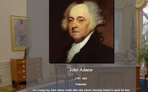
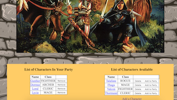
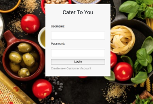
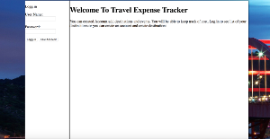
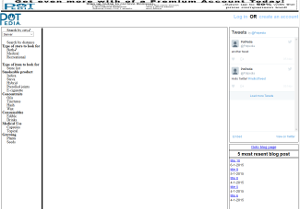
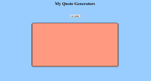
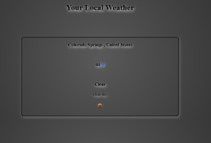
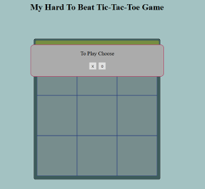

Mustafa Y Alici
Computer programmer and web Developer
I am accomplished Full Stack Developer experienced in the full life cycle including requirements, design, development, and deployment. I trained at the Skill Distillery and earned a Java certification. I have full competency in Java SE, Java EE, TDD practices with JUnit, PHP, Javascript, MySQL, jQuery, Angular.
- HTML, CSS, Javascript, jQuery, XML, JSON
- Java SE, EE, Spring, JDBC , JPA, JSP,
- Maven, Gradle, Tomcat, AWS, GitHub
- UI Design, Front End, Back End, Root Cause Debuging
- LAMP Servers, Linux, Apache, MySql, PHP
- Database Best Practices, Database Schema Design, DBMS
Java Full Stack Projects
Presidents
This a group project show list of presidents. You can search by party affiliation. Each presdident list terms in office and an interesting fact about each of them
This was a group project using Java EE edition with JSP and JDBC. There is MySql dataBase to persist data
Live site:Presidents
repository Github
Party Picker
This a simple Java Spring C.R.U.D. You can create Adventurers and add them to the part. You can edit their gear and create new gear
This project used spring MVC with maven and JSP. There is a MySql dataBase to persist the data
Live site:Party Picker
repository Github
Cater To You
This Group mid-term Project for Skill Distillery. This site allows users to Catering menu from choice of venders. It allows vendors to add menu options for user to pick from. Users and venders have diferent based on login. User get itemised list of product and a order history.
This project was builg Using Java Spring MVC, JSP, JPA. With a MySql dataBase to persist the data. We also used some javascript. We used Trello keep track of task and used agile practice. We had morning stand ups and evening stand ups.
Live site:Cater To You
repository Github
Travel Tracker
This app allows you to create users add destinations and event at each destinaton. You can perfome full C.R.U.D. on event and destinations. This keeps track of cost of each destinaton and event.
This is built on Java Spring MVC, JPA, MySql for the back end. This uses Angular for the front end
Live site:Travel Tracker
repository Github
These are Full stack PHP projects
Potpedia

Web Programmer for both their customer facing website and back end PHP database interface Potpedia is web site where users can look for marijuana products and dispensaries. Users can search by price, location and rating. Users also can create an account review products, add products and dispensaries to their favorites
Live website: Potpedia
These are Front end only projects
My quote Machine
This a simple site that generates a random quote using a API and allows some one to share it on their twitter feed. This is poject I did to learn using API
Live site:Quote Machine
Local Weather
This is another simple site that shows local weather. this was done to learn more the use of more API
Live site:Weather App
Tic-Tac-Toe game
This is tic-tac-toe that should be unbeatable I used the minmax algorithm for the AI
Live site:The Game